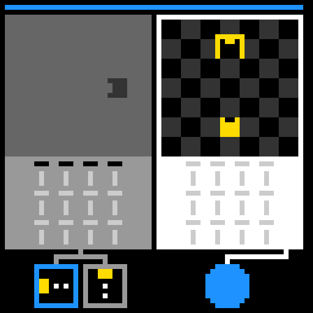
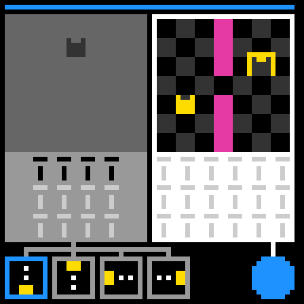
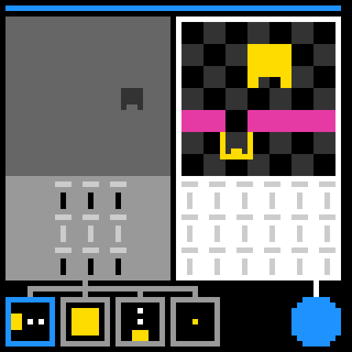

Keep
Cross-level control memory, explicit objectives, direction-ranked search, and level-advance verification.
This page audits EXP-DUCK-028. It shows what was remembered, what goal was stated, what programs were tested, and what the official engine actually accepted.
Level 2 · learned behavior reused
Move the editable right-side robot onto its target in level 2.
The target is above the robot. Memory says command
33 means Up, so Up is tested first.
1 candidate tested. The engine advanced to level 3.


Level 3 · held-out search
Move the editable right-side robot onto its target in level 3.
Right and Up are tried first because the target is right and above. The walls change after every third command, so order matters.
258 candidates tested before one advanced the engine to level 4.


| Predicted program | Actual result |
|---|---|
| Right Right Right Right Right Right | Did not advance |
| Right Right Right Right Right Up | Did not advance |
| Right Right Right Right Right Left | Did not advance |
| Right Right Right Right Right Down | Did not advance |
| Right Right Right Right Up Right | Did not advance |
| Right Right Right Right Up Up | Did not advance |
| Right Right Right Right Up Left | Did not advance |
| Right Right Right Right Up Down | Did not advance |
Cross-level control memory, explicit objectives, direction-ranked search, and level-advance verification.
Copying the visible demonstration.
Down Down Down Down did not solve level 3.
Infer the simulator from pixels and observed action effects, then pass a new held-out game without reading its source.